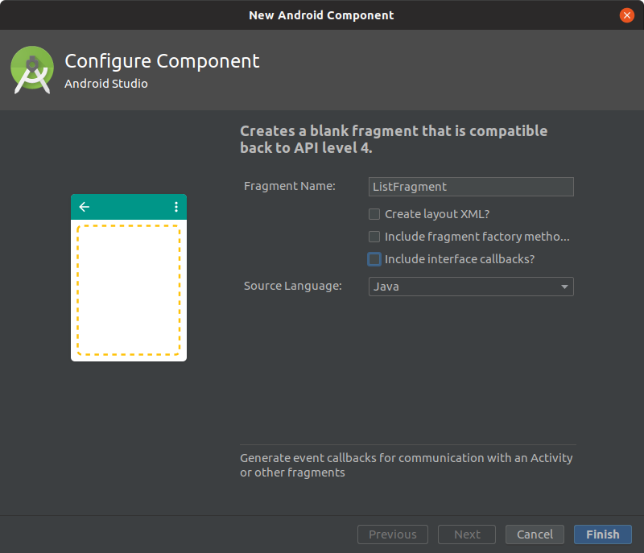

Použitie fragmentov¶
Nasledujúca časť bude venovaná problematike fragmentov a úprave aplikácie tak aby využívala dva fragmenty pričom jeden bude zobrazovať zoznam receptov a druhý zobrazí detail receptu.
![class diagram]( "Diagram rozhrania")
1. ListFragment¶
Tento fragment preberie funkcionalitu ako mala doteraz hlavna aktivita tj. zobraziť v Recyclerview zoznamom receptov.
Vytvorte nový fragment (Blank)
- Názov triedy: ListFragment
- Vyberte typ fragmentu blank


1.1 Layout fragmentu¶
Layout fragmentu použijeme rovnaky ako bol použitý v hlavnej aktivite.
ListFragment.java:
1 2 3 4 5 6 7 8 | ... @Override public View onCreateView(LayoutInflater inflater, ViewGroup container, Bundle savedInstanceState) { return inflater.inflate(R.layout.recycler_list_layout, container, false); } ... |
1.2 RecylerView¶
Do metódy onActivityCreated presunieme funkcionalitu z metódy onCreate, ktorá je súčastou MainActivity.java.
Info
Metóda onActivityCreated v životnom cykle nasleduje po metóde onCreateView. Je garantované, že pri volaní tejto metódy je asociovaná aktivita už vytvorená.
1 2 3 4 5 6 7 8 9 10 11 12 13 14 15 16 17 18 | @Override public void onActivityCreated(@Nullable Bundle savedInstanceState) { super.onActivityCreated(savedInstanceState); RecyclerView recyclerView = getView().findViewById(R.id.listRecyclerView); // use this setting to improve performance if you know that changes // in content do not change the layout size of the RecyclerView recyclerView.setHasFixedSize(true); // use a linear layout manager RecyclerView.LayoutManager layoutManager = new LinearLayoutManager(getContext()); recyclerView.setLayoutManager(layoutManager); // specify an adapter (see also next example) MyRecipeRecyclerViewAdapter mAdapter; mAdapter = new MyRecipeRecyclerViewAdapter(RecipesDataSet.getRecipes(getContext()), (MainActivity) getActivity()); recyclerView.setAdapter(mAdapter); } |
Vo vyznačených riadkoch nastali nasledovné zmeny:
findViewByIdnie je súčasťou fragmentu, ale je súčasťou vytvoreného UI, ktorého inštanciu získate pomocougetView()metódy.Contextaplikácie sa získa pomocou metódygetContexta inštanciu asociovanej aktivity pomocougetActivity()
2. Detail fragment¶
Rovnakým spôsobom ako ListFragment vytvorte nový fragment s názom DetailFragment.
2.1 Layout fragmentu¶
DetailFragment.java:
1 2 3 4 5 6 | @Override public View onCreateView(LayoutInflater inflater, ViewGroup container, Bundle savedInstanceState) { // Inflate the layout for this fragment return inflater.inflate(R.layout.fragment_detail, container, false); } |
2.2 Factory metóda¶
Na odoslanie potrebných dát do fragmentu sa využíva objekt typu Bundle , ktorý je odovzdaný novo vytvorenému fragmentu pomocu metódy setArguments . Fragment k danému objektu može pristúpiť pomocou metódy getArguments. Tento Bundle objekt je spravovany operačným systémom. Daný mechanizus sa vyžíva vzhľadom na fakt, že fragment môže mať iba bezparametrický konštruktor pomocou ktorého operačný systém reinicializuje fragment pri reštarte aplikácie v dôsledku konfiguračnej zmeny(napr. rotacia obrazovky) .
Na vytvorenie nove inštancie fragmentu sa často používa tz. factory metóda:
DetailFragment.java:
1 2 3 4 5 6 7 8 9 10 11 12 13 14 15 16 17 18 19 20 21 22 23 24 25 26 27 28 29 30 31 32 33 34 35 36 37 38 39 40 41 42 43 44 45 46 47 48 49 50 51 52 | public class DetailFragment extends Fragment { private int position; private static final String POS_TAG = "POSITION"; public DetailFragment() { } // Factory metoda public static DetailFragment createDetailFragment(int position) { DetailFragment detailFragment = new DetailFragment(); Bundle bundle = new Bundle(); bundle.putInt(POS_TAG, position); detailFragment.setArguments(bundle); return detailFragment; } @Override public void onCreate(@Nullable Bundle savedInstanceState) { super.onCreate(savedInstanceState); // Load position from arguments assert getArguments() != null; position = getArguments().getInt(POS_TAG, 0); } @Override public View onCreateView(LayoutInflater inflater, ViewGroup container, Bundle savedInstanceState) { // Inflate the layout for this fragment return inflater.inflate(R.layout.fragment_detail, container, false); } @Override public void onActivityCreated(@Nullable Bundle savedInstanceState) { super.onActivityCreated(savedInstanceState); ImageView img = getView().findViewById(R.id.detailImage); TextView title = getView().findViewById(R.id.recipeTitle); TextView detail = getView().findViewById(R.id.recipeDetail); TextView ingredients = getView().findViewById(R.id.recipeIngred); Recipe recipe = RecipesDataSet.getRecipes(getContext()).get(position); img.setImageBitmap(recipe.getBitmapFromAsset()); title.setText(recipe.title); detail.setText(recipe.detail); String ingred = TextUtils.join("\n\r", recipe.ingredients); ingredients.setText(ingred); } } |
3. Úprava MainActivity¶
Na vytvorenie fragmentu používame FragmentManager, ktorý získame pomocu metódy getSupportFragmentManager alebo getFragmentManager záleží či používame fragment zo support knižnice (resp. androidX).
MainActivity.java
1 2 3 4 5 6 7 8 9 10 11 12 13 14 15 16 17 18 19 20 21 22 23 24 25 26 27 28 29 | public class MainActivity extends AppCompatActivity implements MyRecipeRecyclerViewAdapter.OnRecipeListInteraction { @Override protected void onCreate(Bundle savedInstanceState) { super.onCreate(savedInstanceState); setContentView(R.layout.main_layout); // Testovanie či už fragmenty neexistujú if ((getSupportFragmentManager().findFragmentByTag("detailFragment") == null) && (getSupportFragmentManager().findFragmentByTag("listFragment") == null)) { getSupportFragmentManager().beginTransaction() .replace(R.id.fragment_container, new ListFragment(), "listFragment") .commit(); } } // Vytvorenie detail fragmentu @Override public void onRecipeClick(int position) { getSupportFragmentManager().beginTransaction() .replace(R.id.fragment_container, DetailFragment.createDetailFragment(position), "detailFragment") .addToBackStack(null) // Ulozenie do zasobnika fragmentov .commit(); } } |
Reštarovanie aplikácie vplyvom konfiguračných zmien¶
Vzhľadom na životný cyklus aplikácie a takisto vplyvom konfiguračných zmien treba uvažovať ako správne spracovať reštartovanie aplikácie. Ako vieme po reštarte aplikácie začína životný cyklus zavolaním metódy onCreate v ktorej sa inicializuje hlavný fragment ListFragment. Každý pripojený fragment k aktivite prechádza tiez reštartom, ktorý následne vyústi do stavu, kedy je fragment systémom nanovo vytvorený a zobrazený v rodičovskom kontajneri. V tomto prípade treba ošetriť aby sme v métode onCreate hlavnej aktivity opätovne nevytvorili nový fragment. To sa dá zabezpečit nájdením inštanci existujúceho fragmentu.
1 | getSupportFragmentManager().findFragmentByTag("listFragment") |
Tag
Fragment je identifikovaný pomocu Tag tzv. menovky, ktorú sme určili pri transakcii fragmentu.